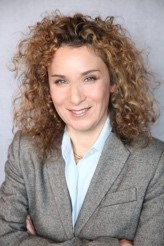
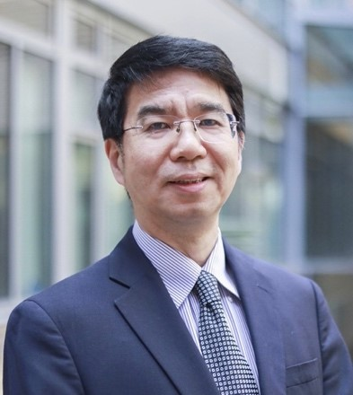
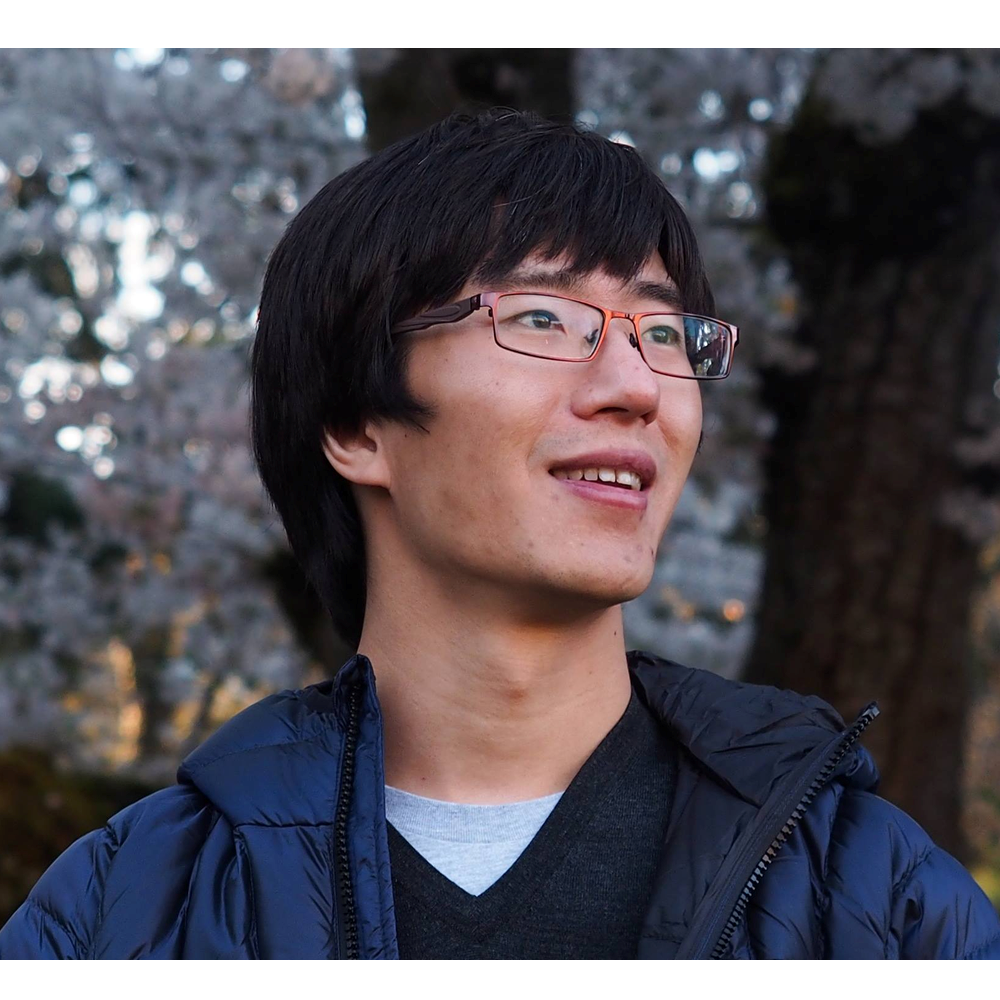

For decades, digital design has remained largely unchanged. While digital hardware performance has marched along at a relentless pace of improvement, the design process itself has been relatively constant. Digital synthesis, from the late 1980’s, is arguably the most recent EDA innovation that was truly impactful. In the face of escalating performance, connectivity, and security expectations, it is now time for EDA methodologies and tools to step up and play a more inventive role. This is especially critical as Moore’s Law runs out of gas. In this keynote, DARPA PM Serge Leef will outline a new call-to-innovation in four major areas: IP generators, hardware/software co-development, functional verification, and full-system optimization.
Short Bio
Mr. Serge Leef joined DARPA in August 2018 as a program manager in the Microsystems Technology Office (MTO). His research interests include computer architecture, chip design tools, simulation, synthesis, semiconductor intellectual property (IP), cyber-physical modeling, distributed systems, secure design flows, and supply chain management. He is also interested in the facilitation of startup ecosystems and business aspects of technology.
Leef came to DARPA from Mentor, now Siemens EDA, where from 2010 until 2018 he was a Vice President of New Ventures, responsible for identifying and developing technology and business opportunities in systems-oriented markets. Additionally, from 1999 to 2018, he served as a division General Manager, responsible for defining strategies and building successful businesses around design automation products in the areas of hardware/software co-design, multi-physics simulation, IP integration, SoC optimization, design data management, automotive/aerospace networking, cloud-based electronic design, Internet of Things (IoT) infrastructure, and hardware cybersecurity.
Prior to joining Mentor, he was responsible for design automation at Silicon Graphics, where he and his team created revolutionary, high-speed simulation tools to enable the design of high-speed 3D graphics chips, which defined the state-of-the-art in visualization, imaging, gaming, and special effects for a decade. Prior to that, he managed a CAE/CAD organization at Microchip and developed functional and physical design and verification tools for major 8- and 16-bit microcontroller and microprocessor programs at Intel.
Leef received his Bachelor of Science degree in electrical engineering and Master of Science degree in computer science from Arizona State University. He has served on corporate, state, and academic advisory boards, delivered numerous public speeches, and holds patents in hardware Trojan detection and Internet of Things (loT) infrastructure.
Keynote 2: Wednesday, July, 07, 2021
The Dual Role of Technology in Addressing Climate Change
Tamar Eilam

IBM Fellow
Abstract
Climate change is considered the biggest threat and challenge currently facing humanity. The scientific community have established that failing to keep the global temperature from rising above the upper limit of 1.5 degrees Celsius will have dire consequences, including world hunger, degraded health, and political instability. Attention is increasing on the role that technology plays in relationship with climate change. Some are concerned about the energy consumption toll of technology, and in particular energy-devouring workloads such as AI. Others see opportunity in leveraging technology, including AI, to combat climate change.
In my talk I will address the two sides of the coin. I posit that technology can play an absolute crucial role in accelerating the scientific discovery of new material, e.g., for carbon capture, in improvements of our resiliency and preparedness to climate change, and much more. At the same time, I posit that as technologists we have responsibility to improve the efficiency of system, software, and management software. New trends, such as the commercialization of renewable energy, and system innovation such as specialized hardware open the door for new research opportunities. Cloud computing in particular ought to be scrutinized closely. Cloud computing promise efficiency gains, however, third party clouds, despite the PR noise, are yet to adopt openness and clear methodology to enable meaningful quantification of the actual carbon footprint cost, and potential savings.
Short Bio
Dr. Tamar Eilam is an IBM Fellow in the IBM T.J. Watson Research Center, in New York. Dr Eilam has twenty years of experience leading innovation in cloud computing. Her recent focus is Cloud and Climate. Specifically, she leads research on the quantification and reduction of carbon footprint associated with cloud workloads through innovation in system, software and management software. Tamar completed her Ph.D. in 2000 in Computer Science in the Technion, Israel, and joined IBM Research as a Research Staff Member that same year. Tamar is the author of numerous award-winning publications and patents, and an experienced international speaker.
Keynote 3: Thursday, July, 08, 2021
Optimal Layout Synthesis for Quantum Computing
Jason Cong

Abstract
As quantum computing devices continues to scale up, we would like to access the quality of the existing quantum compilation (or design automation) tools. As the first step, we focus on the layout synthesis step. We develop a novel method to construct a family of quantum circuits with known optimal, QUEKO, which have known optimal depths and gate counts on a given quantum device coupling graph. With QUEKO, we evaluated several leading industry and academic LSQC tools, including Cirq from Google, Qiskit from IBM, and t|ket> from CQC. We found rather surprisingly large optimality gaps, up to 45x on even near-term feasible circuits. Then, we went on to develop a tool for optimal layout synthesis for quantum computing, named OLSQ, which formulates LSQC as a mathematical optimization problem. OLSQ more compactly represents the solution space than previous optimal solutions and achieved exponential reduction in computational complexity. Further enhancements to OLSQ can be made for domain-specific quantum applications. We shall highlight two such applications: quantum approximate optimization algorithm (QAOA) and chemical simulation. (Joint work with Bochen Daniel Tan)
Short Bio
Jason Cong is the Volgenau Chair for Engineering Excellence Professor (and former Department Chair) at the UCLA Computer Science Department, with joint appointment from the Electrical Engineering Department, the director of Center for Domain-Specific Computing (CDSC), and the director of VLSI Architecture, Synthesis, and Technology (VAST) Laboratory. Dr. Cong’s research interests include novel architectures and compilation for customizable computing, synthesis of VLSI circuits and systems, and highly scalable algorithms. He has close to 500 publications in these areas, including 16 best paper awards, three 10-Year Most Influential Paper Awards, and the first paper inducted to the FPGA and Reconfigurable Computing Hall of Fame. He and his former students co-founded AutoESL, which developed the most widely used high-level synthesis tool for FPGAs (renamed to Vivado HLS after Xilinx’s acquisition). He was elected to an IEEE Fellow in 2000, ACM Fellow in 2008, the National Academy of Engineering in 2017, and the National Academy of Inventors in 2020.
IoT and AI Will Develop Revolutionary Solutions to Critical Global Problems: A Real Promise or Just a Hype?
Organiser:
Dr. Sandip Ray, University of Florida
Moderator:
Dr. Himanshu Thapliyal, University of Kentucky
Panelists:
Dr. Kemal Akkaya, Florida International University
Dr. Swarup Bhunia, University of Florida
Dr. Juncao Li, Lime Inc.
Dr. Saraju Mohanty, University of North Texas
Dr. Dan Zhang, Google Inc.
Summary
The last several years have seen phenomenal research activity in the interplay of Internet-of-Things, Cloud Infrastructure, Communications and Connectivity, and Artificial Intelligence, ushering in a vision of a smart connected world. An implicit promise of the new era is that age-old global problems will find new and revolutionary solutions through a combination of pervasive computing, connectivity, and intelligence. But is there a basis of this promise, or is this just a hype? The panel will examine this question from a variety of perspectives.
Some key questions to be discussed (among others) include:
What are the global problems that can be targeted through computing, connectivity, and AI?
How can we use these new technologies in concert to make focused attacks on global problems?
What are the major roadblocks? Are they surmountable?
When can we see revolutionary breakthroughs in solutions ushered by the new era?
Keynote 4: Friday, July, 09, 2021
Transforming Chip Design in the Age of Machine Learning
Dan Zhang

Google Brain
Abstract
The rise of machine learning has already transformed many research areas, and has the potential to transform chip design. While ML has inspired the design of new domain-specific accelerators, such as Tensor Processing Units (TPUs), there exists many opportunities for using ML to target traditional areas of chip design across the entire stack. In this talk, I will discuss how to identify whether ML can be applied for a particular problem, and what strategies might be suitable for building a practical and robust ML-based solution. I will cover several research projects from the ML for Systems team in Google Brain, including our work on using deep reinforcement learning to drive state-of-the-art results in chip floorplanning, and our latest effort in using ML to automatically optimize key ML accelerator design decisions within the hardware-software stack.
Short Bio
Dr. Dan Zhang is a researcher at Google Brain on the ML for Systems team, where he currently leads a joint effort to use ML for hardware-software co-optimization targeting ML accelerators. His research interests include hardware accelerators, neural architecture search, FPGA acceleration, high level synthesis, parallel graph analytics, branch prediction, and computer architecture. Prior to Google, Dan worked at Microsoft on hardware architecture for the Brainwave FPGA-based datacenter accelerator for ML inference, and was the primary developer for the Catapult FPGA open-source academic program. Dr. Zhang received his B.S.E. degree in Computer Engineering from the University of Michigan, and his Ph.D. degree in Electrical and Computer Engineering from the University of Texas at Austin advised by Derek Chiou.